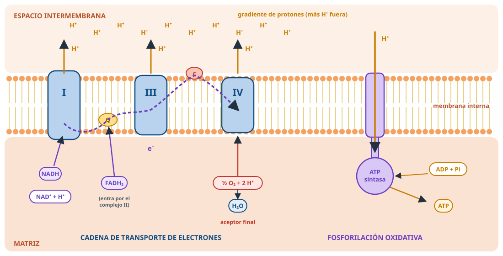

Respiración celular
Todo lo esencial para repasar. Resaltado = palabra clave de los criterios de corrección.
1 · Visión general
- C₆H₁₂O₆ + 6 O₂ → 6 CO₂ + 6 H₂O + ATP: oxidación completa; aceptor final, el O₂.
- Glucólisis (citosol) → descarboxilación y Krebs (matriz) → cadena y fosforilación oxidativa (membrana interna).
- Procariotas: en el citosol y la membrana plasmática.

2 · Glucólisis
- Glucosa → 2 ácido pirúvico; citosol; sin O₂.
- Entra: glucosa, NAD⁺, ADP, Pi. Sale: piruvato, NADH, 2 ATP netos (a nivel de sustrato).
3 · Piruvato
- Sin O₂: fermentación (lactato, etanol; NAD⁺).
- Con O₂: descarboxilación oxidativa → acetil-CoA + CO₂ + NADH (matriz).
4 · Ciclo de Krebs
- Oxida grupos acetilo hasta CO₂; matriz.
- Entra: acetil-CoA + oxalacético (se regenera).
- Por vuelta: 2 CO₂, 3 NADH, 1 FADH₂, 1 GTP. 2 vueltas/glucosa.
- Catabólico, produce ATP (Calvin lo consume).
5 · Cadena y fosforilación oxidativa
- Cadena (membrana interna): e⁻ de NADH y FADH₂ pasan por transportadores, caen de energía, bombean H⁺ al espacio intermembrana; el O₂ se reduce a H₂O.
- Fosforilación oxidativa: los H⁺ vuelven por la ATP sintasa (bicapa impermeable) → ADP + Pi → ATP. La mayor parte del ATP.
- Hace falta la integridad de las membranas.
6 · β-oxidación
- Triglicéridos → lipólisis → ácidos grasos (activados con CoA).
- Matriz (y peroxisomas): → acetil-CoA, NADH, FADH₂.
- 2 C por vuelta. Necesita O₂ (indirectamente).
7 · Rendimiento
| Respiración aerobia | Anaerobia | Fermentación | |
| Oxidación | completa | completa | parcial |
| Aceptor | O₂ | nitrato, sulfato | orgánico |
| Cadena | sí | sí | no |
| ATP | muchos (30-38) | menos | 2 |
8 · Casos
- Rotenona, CO, cianuro: sin cadena → sin ATP.
- Eritrocitos: fermentación láctica, 2 ATP.
- Procariotas: pueden ser aerobias sin mitocondrias.
⚠️ Errores que restan
- «El ciclo de Krebs usa O₂»: no directamente.
- «La glucólisis ocurre en la mitocondria»: no.
- Fermentación «con cadena respiratoria»: no.